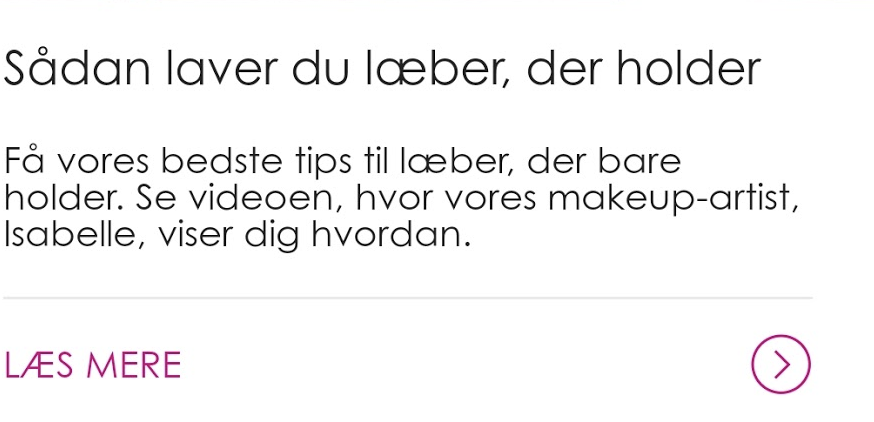
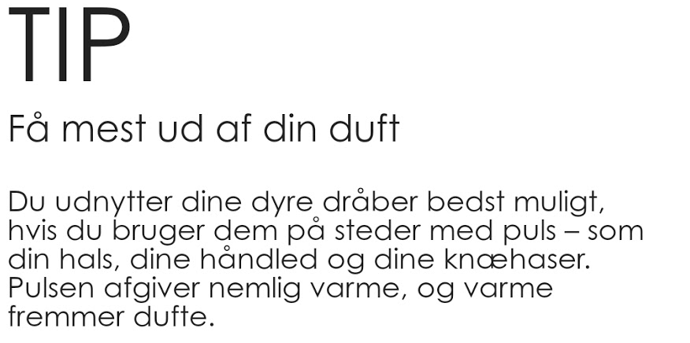

Felter
Inspiration

<h2> Sådan laver du læber, der holder </h1>
<h3> Få vores bedste tips til læber, der bare holder. Se videoen, hvor vores makeup-artist, Isabelle, viser dig hvordan.</h2>
<hr.2>
<p><a hfref=""></p>
Bruges hvornår?
Bruges til blog- og videoposts under inspiration.

<h1> TIP </h1>
<h2> Få mest ud af din duft</h2>
<h3> Du udnytter dine dyre dråber bedst muligt, hvis du bruger dem på steder med puls - som din hals, dine håndled og dine knæhaser. Pulsen afgiver nemlig varme, og varme fremmer dufte.</h2>
Bruges hvornår?
Bruges til TIP-posts under inspiration.